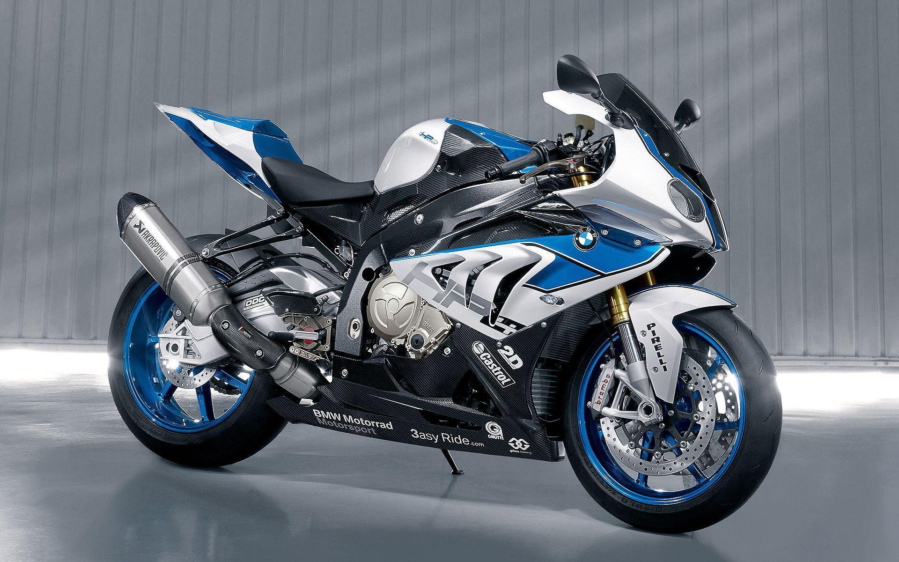

BMW S1000R

Descripcion: La BMW S1000RR es una motocicleta deportiva de alto rendimiento, reconocida por su potencia, ligereza y tecnología avanzada. Diseñada para velocidad y precisión, es ideal tanto para pista como para carretera.
- Motor: 999 cc, 4 cilindros en línea, refrigerado por líquido
- Potencia: 207 hp a 13.500 rpm
- Par máximo: 113 Nm a 11.000 rpm
- Aceleración: 0-100 km/h en 3.1 segundos
- Velocidad máxima: más de 299 km/h
- Transmisión: 6 velocidades con Quickshifter
- Tecnología: Modos de conducción, DTC, ABS Pro, pantalla TFT
Precio:
$25.000 - $30.000 USD
Volver